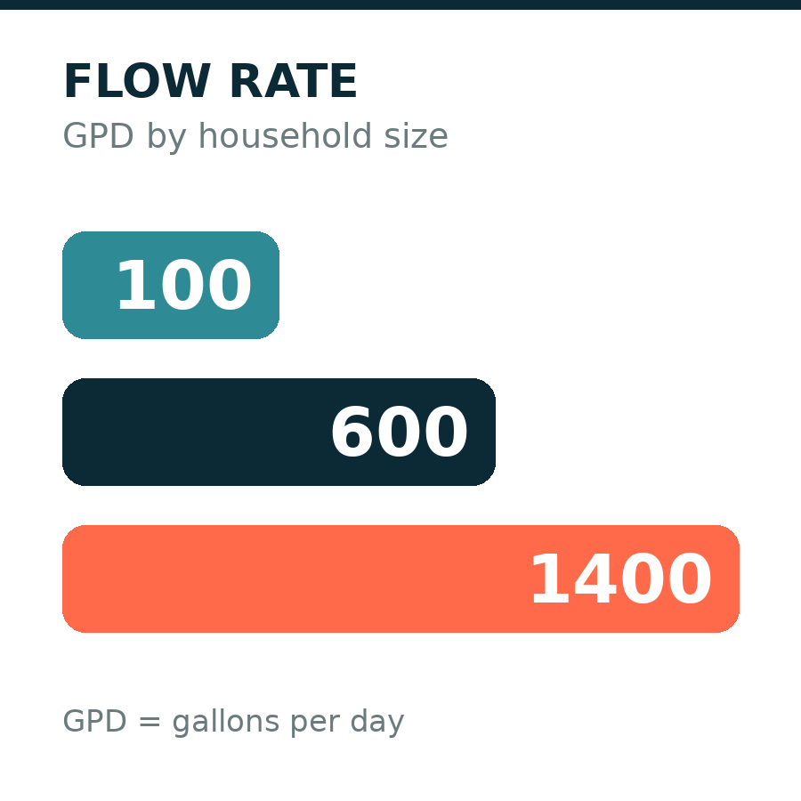
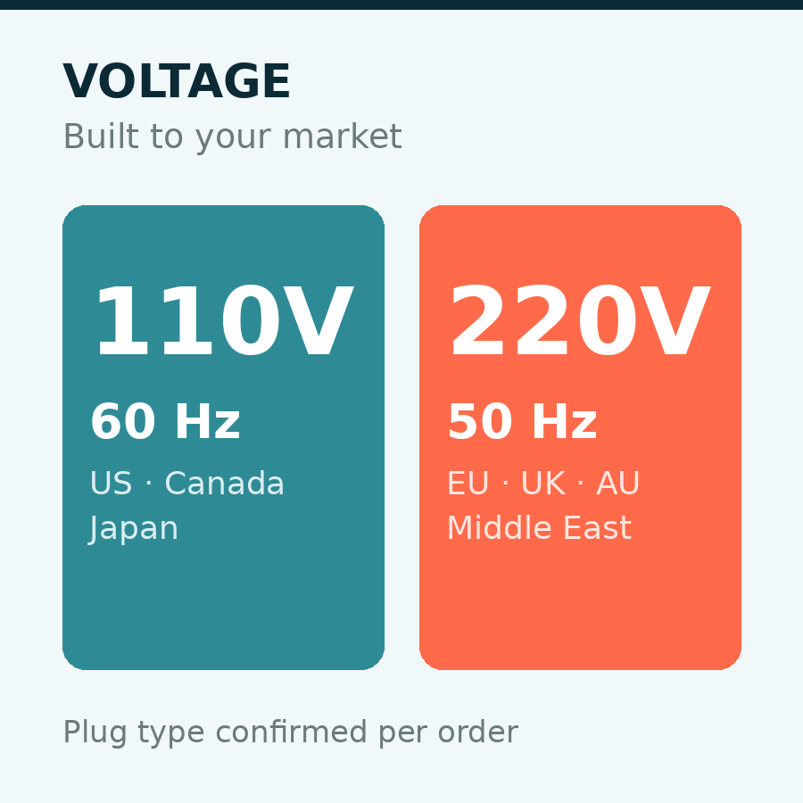

01 / Cozinha
Cozinha — sob a pia
Escondido sob a pia — RO potente para a cozinha da família.
Modelo representativo:RP-U09 — 800–1400 GPD · 4 opções.
ROPureOEM / Estúdio de produto OEM
Comece com um modelo confirmado. Adapte-o ao seu mercado. Aprove a sua amostra.
Explorar modelos Vamos conversar sobre o seu projeto
Seleção de produtos · Marca própria · Coordenação de exportação

Buscar por cenário
01 / Cozinha
Escondido sob a pia — RO potente para a cozinha da família.
Modelo representativo:RP-U09 — 800–1400 GPD · 4 opções.

02 / Bancada
Café moído na hora e água purificada por RO em um só aparelho de bancada.
Modelo representativo:RP-C11 — do grão à xícara · água purificada por RO.

03 / Comercial
Água quente, fria e com gelo, de piso, para escritórios, escolas e espaços compartilhados.
Modelo representativo:RP-C23 — RO 100G · 50–100 pessoas.

04 / Casa toda
Amaciamento central para a casa toda.
Modelo representativo:Linha RP-W01 — 32,000–64,000 grain · 3 tamanhos.
Um olhar mais de perto
Modelos confirmados do catálogo — revise as especificações primeiro. MOQ: 200 unidades por modelo.
BancadaCafeteira 4 em 1 do grão à xícara com purificação RO
 Bancada
BancadaÁgua com gás, fria e quente — duas variantes
 Sob a pia
Sob a piaPurificador RO de água hidrogenada sob a pia
 Torneira
TorneiraFiltro de torneira giratório 360°
 Chuveiro
ChuveiroFiltro de chuveiro retangular
 Sob a pia
Sob a piaSistema RO de cartucho extraível sem ferramentas
 Bancada
BancadaPurificador RO com jarra aquecedora
 Bancada
BancadaPurificador RO com gelo, água quente e fria

OEM vs ODM
Escolha um modelo confirmado e faça dele o seu: logotipo, cor, filtros, torneira, embalagem.
Personalize estrutura, função e molde conforme o seu briefing. Todo briefing precisa primeiro de uma avaliação de engenharia.
Do modelo à sua marca
Fábrica e controle de qualidade


Fotos da fábrica e do controle de qualidade: produção, testes e envio.
Certificação
Conte-nos o seu modelo e o mercado-alvo — confirmamos a lista exata antes de você pedir.
Mercados típicos:UE · Reino Unido · EUA · Oriente Médio · Sudeste Asiático · Austrália
Outros mercados, incluindo CB quando aplicável, são confirmados por modelo mediante consulta.

Perguntas frequentes
200 unidades por modelo.
Sim — as amostras são pagas e o custo é reembolsado no seu primeiro pedido em volume. Aprove a amostra, marca e embalagem incluídas, antes da produção em volume.
O prazo de entrega é confirmado por orçamento — depende do modelo, da quantidade e da certificação.
O pagamento deve ser feito antes do envio. Não oferecemos condições de crédito.
Confirmado por mercado, por modelo e por pedido. Conte-nos o seu modelo e o mercado-alvo e confirmaremos a lista exata antes de você pedir.
Guias

Guia de compra
A MOQ é de 200 unidades por modelo para purificadores de água de marca própria. Amostras primeiro, taxa reembolsada no seu primeiro pedido em volume, 40 dias para envio após a aprovação da amostra.

Guia de compra
Adapte a capacidade de RO à sua água de alimentação antes de escolher um modelo — capacidades de bancada, sob a pia e de dispensador comparadas.

Guia de compra
A voltagem e a frequência podem ser configuradas conforme o país-alvo — confirme-as por modelo e pedido.
Conte-nos o seu mercado, o tipo de produto e a quantidade.